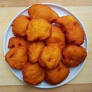

Akara

Description
This is a bean cake commonly prepared by the Yoruba people of Nigeria.
Ingredient
- Bean flour
- Vegetable oil
- Onion
- Pepper
- Tomato paste
- Onion
- Salt
- etc.
Steps
- In a bowl, add bean flour.
- Add chopped onions and grinded pepper.
- Add Tomato paste.
- Mix with some water and stir thorougly.
- In a frying pan on fire, add Vegetable oil.
- Using cooking spoon, put the mixed bean flour in the pan as many it can take.
- In every 1-2 minutes, using a cooking fork, turn the bean cake.
- etc.
Back to Homepage